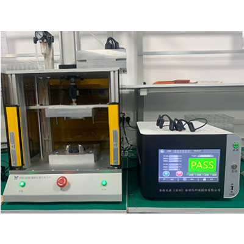

كيف يبني اختبار التسرب دفاعًا قويًا للموثوقية في الإلكترونيات
1. لماذا يُعتبر اختبار التسرب "منقذ الحياة" للمنتجات الإلكترونية؟
المكونات الأساسية للمنتجات الإلكترونية—الدارات الدقيقة، الشرائح الإلكترونية، والوحدات عالية التكامل—هي "القلب الحساس" للأجهزة. بمجرد تسرب السوائل (الماء، رذاذ الزيت)، الغازات (الرطوبة)، أو الجسيمات (الغبار) عبر الحاجز السدادي، تكون العواقب من دوائر قصيرة وتدهور الأداء إلى فشل كامل للجهاز.
تُعد حماية التسرب ضرورية في الحالات التالية:
- الإلكترونيات الاستهلاكية: الأجهزة مثل الهواتف الذكية وسماعات الأذن اللاسلكية تتطلب شهادة IP67/IP68. بدون ذلك، يمكن أن يكون العرق أو المطر "قاتلًا".
- الأجهزة الخارجية: كاميرات الحركة وأجهزة الاستشعار الميدانية يجب أن تتحمل العواصف الرملية والأمطار الغزيرة. فشل السدادة قد يتسبب في توقف الأجهزة في بيئات قاسية.
- الإلكترونيات الطبية: أجهزة قياس الجلوكوز أو الأطراف المزروعة يجب أن تكون مختومة تمامًا لمنع تسرب السوائل الجسدية أو التأثير على القياسات.
- إلكترونيات المركبات الجديدة للطاقة: إذا تسربت المياه إلى أنظمة إدارة البطاريات أو الموصلات عالية الجهد، قد يؤدي ذلك إلى تيارات تسرب أو حتى حرائق.
يُعد اختبار التسرب قبل الشحن آخر حاجز حماية ضد هذه المخاطر، مما يضمن جودة المنتج ويقلل تكاليف الصيانة بعد البيع بأكثر من 40%.
2. "الأسرار التقنية" لاختبار التسرب
تُقسم طرق الكشف عن التسرب الشائعة حاليًا إلى أربع فئات، كل منها مناسب لتطبيقات مختلفة:
| الطريقة | المبدأ | المزايا | التطبيقات |
|---|---|---|---|
| طريقة الضغط التفاضلي | تطبيق ضغط أو فراغ ومراقبة تغير الضغط | دقة عالية (±0.1Pa)، غير مدمرة | الهواتف، إلكترونيات السيارات، الأجزاء المتوسطة والكبيرة |
| طريقة التدفق | توريد هواء مستمر مع مراقبة تدفق الهواء | كشف فوري، مناسب للتسربات الكبيرة | أغطية الأجهزة الخارجية، الوحدات الكبيرة |
| طريقة الضغط الجزئي | كشف التسربات الصغيرة تحت ضغط منخفض جدًا (≤10Pa) | حساسية عالية جدًا (يمكن الكشف عن 0.01cc/دقيقة) | سماعات الأذن، أجهزة الاستشعار، المكونات الصغيرة |
| الغمر بالماء التقليدي | غمر المنتج في الماء وملاحظة الفقاعات | تكلفة منخفضة | قيد الاستبعاد (غير فعال، خطر الضرر الثانوي) |
من بين هذه الطرق، تُعد طريقتا الضغط التفاضلي والضغط الجزئي الأعلى اختيارًا في صناعة الإلكترونيات بسبب "السرعة + الدقة" — حيث تستغرق بعض الاختبارات ثانيتين فقط دون الإضرار بالمكونات.
3. أربعة معايير رئيسية يجب مراقبتها أثناء الاختبار
تعتمد موثوقية نتائج اختبار التسرب على التحكم الدقيق في هذه العوامل:
- ضغط الاختبار: يجب أن يتوافق مع حدود تصميم المنتج. على سبيل المثال، تجاويف سماعات الأذن عادة تتحمل ≤50kPa؛ الضغط الزائد قد يشوه الغلاف.
- معدل التسرب المسموح به: لكل تصنيف IP معايير محددة. IP67 يسمح ≤0.3cc/دقيقة، IP68 يتطلب ≤0.1cc/دقيقة.
- مدة الاختبار: تشمل الضغط (الاستقرار)، الحجز (إزالة التداخل)، والكشف. المنتجات الصغيرة 3–5 ثوانٍ، الوحدات الكبيرة 10–15 ثانية.
- تصميم التجهيز: غالبًا ما يُهمل لكنه حاسم. للأغطية المنحنية للهواتف أو أجهزة الاستشعار غير المنتظمة، تُستخدم سدادات سيليكون مخصصة وتجهيزات تحديد الموقع لمنع قراءات خاطئة (الدقة ±0.5%).
4. من الاختبار إلى الموثوقية: مسار عملي للأمام
اختبار التسرب ليس مجرد "فحص نهائي" — بل هو عملية ضمان جودة طوال دورة حياة المنتج:
- مرحلة التصميم: التحقق من الهياكل السدادية لإزالة نقاط الفشل المحتملة مبكرًا.
- مرحلة الإنتاج: فحص 100% لضمان التناسق. على سبيل المثال، خفض مصنع الهواتف الذكية معدل العيوب من 3% إلى 0.1% باستخدام الاختبار الآلي.
- مرحلة ما بعد البيع: البيانات القابلة للتتبع تساعد على تحديد ما إذا كانت الأعطال نتيجة مشكلات في العملية أو النقل.
- قيمة العلامة التجارية: تحسين الأداء السدادي يعزز سمعة المستخدم. ارتفعت معدلات إعادة الشراء بنسبة 25% بعد تحقيق شهادة IPX7.
5. دراسة حالة: كيف تحقق سماعات البلوتوث "موثوقية خالية من التسرب"
سماعات البلوتوث صغيرة الحجم (حجم التجويف ≤5سم³ غالبًا) وتتعرض لبيئات معقدة (عرق، مطر). نفذت علامة تجارية رائدة هذا الحل:
حل الاختبار
استخدام جهاز اختبار تسرب الضغط الجزئي الآلي بالكامل مع تجهيزات مخصصة لتتناسب مع شكل السماعة:
- تطبيق ضغط 30kPa على تجويف السماعة (يعادل 3 أمتار تحت الماء)؛
- الحفاظ على الضغط لمدة 2 ثانية، مراقبة التغير لمدة ثانية واحدة (الهبوط المسموح ≤0.5Pa)؛
- رفع البيانات مباشرة إلى نظام MES؛ المنتجات غير المؤهلة يتم رفضها تلقائيًا.

الشكل 1: معدات اختبار التسرب الآلي

الشكل 2: هيكل سماعة البلوتوث
فيديو: اختبار التسرب الآلي لسماعات البلوتوث
نتائج الاختبار
- انخفضت شكاوى ما بعد البيع المتعلقة بمقاومة الماء من أكثر من 200 شكوى شهريًا إلى أقل من 30 — انخفاض يزيد عن 85٪.
- تم اجتياز شهادة IPX4 بنجاح (حماية ضد رذاذ الماء من أي اتجاه)، مما وسع سيناريوهات الاستخدام الخارجي.
- بلغت كفاءة الاختبار 1,200 وحدة في الساعة، متماشية مع سرعة خط الإنتاج (في حين أن الاختبار اليدوي التقليدي كان يصل إلى 300 وحدة/ساعة فقط).
تظهر هذه الحالة أن اختبار التسرب ليس مجرد أداة لمراقبة الجودة، بل هو محرك خفي لتنافسية المنتج.
6. الاتجاهات المستقبلية: من "الكشف" إلى "الإنذار المبكر الذكي"
مع صغر حجم الأجهزة الإلكترونية وزيادة تكاملها، يتطور اختبار التسرب ليصبح أكثر ذكاءً:
- الكشف المدعوم بالذكاء الاصطناعي: تحليل البيانات لتحسين التعرف على الإيجابيات/السلبيات الكاذبة.
- دمج MES: تسجيل النتائج تلقائيًا للتتبع وإدارة الإنتاج.
- الاختبار المتوازي متعدد القنوات: زيادة كبيرة في إنتاجية التصنيع الكبير.
- كشف التسرب الجزئي: لتلبية متطلبات الأجهزة القابلة للارتداء والمكونات الصغيرة.
الخلاصة
بالنسبة للمنتجات الإلكترونية التي تُعد الأداء والاستقرار عوامل تنافسية رئيسية، فإن اختبار التسرب ليس مجرد فحص جودة، بل هو حماية تقنية لسمعة العلامة التجارية وموثوقية المنتج. ومع ازدياد الطلب على قدرات مقاومة الماء والغبار، سيصبح جهاز اختبار التسرب أكثر أهمية في صناعة الإلكترونيات.